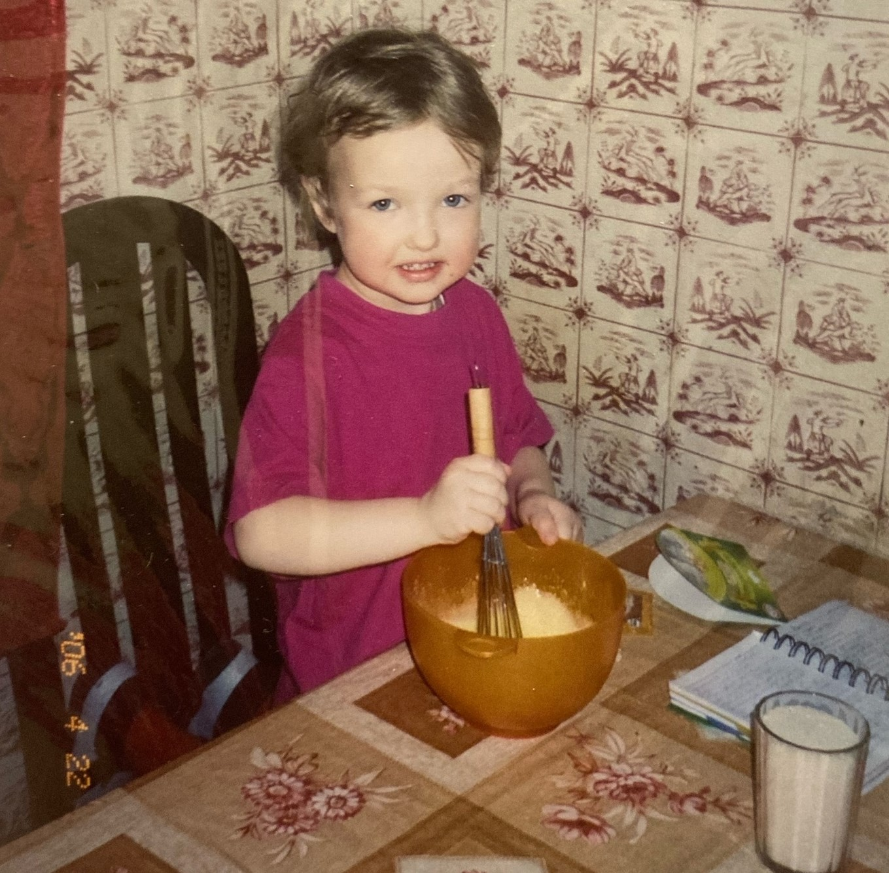

С раннего детства...
Добро пожаловать, дорогой поваренок!
Тебе повезло, ты нашел тот сайт, где собраны золотые рецепты, отобранные собственноручно самой Рухловой Марией Алексеевной (и одобренные Левонтием)! А рецепты и вправду золотые - несложные, быстрые и самое главное вкусные! (именно по такому принципу они были отобраны здесь)
"Готовить должен мужчина!"
- считает Машуля.
Можешь предложить свой рецепт?
Мы будем только рады! 🙂 Создавай свой аккаунт и предлагай, а Маша его оценит!